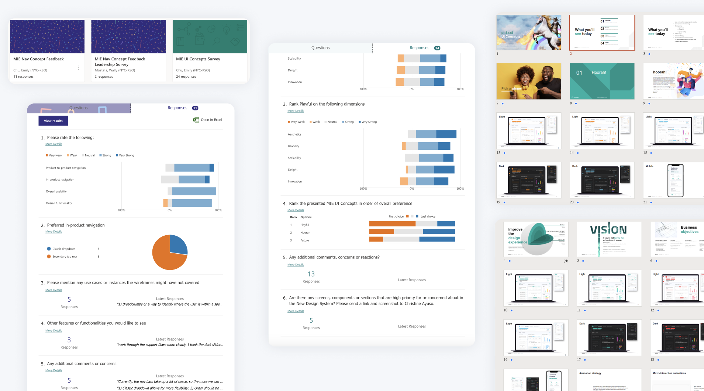

design & development of a new design system for martech tools at Interpublic Group
design system

Activities conducted during the user research phase to best understand the needs of various agencies, product owners,media planners/strategists, analysts, account management and leadership in a new design system:
Activities conducted during the user research phase to best understand the needs of various agencies, product owners,media planners/strategists, analysts, account management and leadership in a new design system:
• Component- and pattern-specific surveys: Creation of surveys to study attitudes, needs and painpoints in components and patterns to prioritize in items such as the navigation in creating an elevated user experience.
• Presentation of all UI concepts to stakeholders: Rounds of presentations to socialize the progress and work in development on UI concepts to all stakeholders involved for feedback. Included comps of relevant product designs, impact on user flow, mobile vs. desktop experience, themeing, ease of maintenance and development.
• Preferences and usability survey: Survey sent out to all stakeholders following rounds of UI concept presentations to summarize feedback on preferences and perception of usability for each UI concept presented.
• General follow-up conversations: Based on any concerns or feedback heard from stakeholders, follow-up conversations to better understand and clarify how the new design system can resolve existing painpoints and address priority needs were conducted.